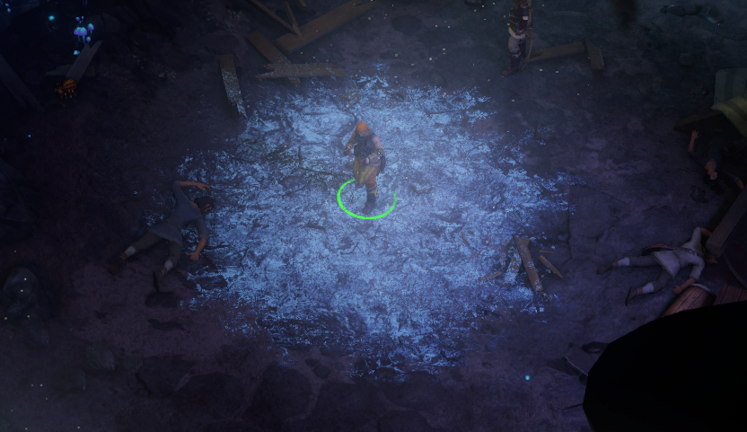

Text, Logging, Unity Assets, and Utils
While the bulk of the functionality of BPCore is implemented in Blueprint Configurators and Builders, there are many utility classes that provide additional functionality.
Text
To display text in game you need to create a LocalizedString with a key used to look up the text for the appropriate locale / language.
Using BPCore you can define text in JSON file containing a MultiLocaleString array, such as this example from the Feat Tutorial:
[
{
"Key": "MagicalAptitude.Name",
"ProcessTemplates": false,
"enGB": "Magical Aptitude",
"deDE": "Magische Begabung"
},
{
"Key": "MagicalAptitude.Description",
"enGB": "You get a +2 bonus on all Spellcraft and Use Magic Device skill checks. If you have 10 or more ranks in one of these skills, the bonus increases to +4 for that skill."
}
]
By default BPCore uses the file LocalizedStrings.json in the same folder as your mod assembly; the same location as the Info.json file for a UMM mod. You can override this by calling LocalizationTool.LoadLocalizationPack() and providing your own file.
Localized Values
In your JSON file you can provide a value for each locale supported in-game: enGB, ruRU, deDE, frFR, zhCN, and esES. You must specify enGB as it is used for any locale without a value.
Referencing MagicalAptitude.Name when the locale is enGB results in "Magical Aptitude" and "Magische Begabung" when the locale is set to deDE.
Template Processing
By default ProcessTemplates is true. When set to true:
- EncyclopediaTool.TagEncyclopediaEntries() is called (English only)
- Generates links to the in-game encyclopedia for relevant entries such as
StrengthorDC
- Generates links to the in-game encyclopedia for relevant entries such as
- The game's
TextTemplateEngineis used to process the string- Converts placeholder strings into output, e.g.
{name}is replaced by the character's name
- Converts placeholder strings into output, e.g.
Tip
Set ProcessTemplates to false for most feature names to ensure there are no UI bugs. Features like encyclopedia links don't work propertly for feature names.
Below is a list of template placeholders as of writing this doc, but the source of truth is the game's code in TextTemplateEngine.
{mf}, MaleFemaleTemplate(){race}, RaceTemplate(){name}, NameTemplate(){kingdomname}, KingdomNameTemplate(){date}, DateTemplate(){time}, TimeTempate(){custom_companion_cost}, CustomCompanionCostTemplate(){respec_cost}, RespecCostTemplate(){leader_cost}, LeaderCostTemplate(){flag}, FlagTemplate(){n}, NarratorStartTemplate(){/n}, NarratorEndTemplate(){g}, TooltipStartTemplate(TooltipType.Glosary){/g}, TooltipEndTemplate(TooltipType.Glosary){d}, TooltipStartTemplate(TooltipType.Decisions){/d}, TooltipEndTemplate(TooltipType.Decisions){m}, TooltipStartTemplate(TooltipType.Mechanics){/m}, TooltipEndTemplate(TooltipType.Mechanics){mf_Regent}, LeaderMaleFemaleTemplate(LeaderType.Counselor){mf_Counsilor}, LeaderMaleFemaleTemplate(LeaderType.Strategist){mf_GrandDiplomat}, LeaderMaleFemaleTemplate(LeaderType.Diplomat){mf_Magister}, LeaderMaleFemaleTemplate(LeaderType.General){mf_General}, LeaderMaleFemaleTemplate(LeaderType.General){target}, LogTemplateTarget(){formula}, LogTemplateFormula(){source}, LogTemplateSource(){text}, LogTemplateText(){text_with_tags}, LogTemplateTextWithTags(){description}, LogTemplateDescription(){count}, LogTemplateCount(){count_form}, LogTemplateCountForm(){roll}, LogTemplateRoll(){d20}, LogTemplateD20(){d100}, LogTemplateD100(){mod}, LogTemplateModifier(){dc}, LogTemplateDC(){chance_dc}, LogTemplateChanceDC(){roll_chance}, LogTemplateRollChance(){slotname}, UITemplateEquipedItem(){wielder}, UITemplateItemWielder(){rations}, UITemplateRations(){recipe}, UITemplateSimpleText(){attack_number}, LogTemplateAttackNumber(){attacks_count}, LogTemplateAttacksCount(){round}, LogTemplateRound(){claimed_villages_count}, SettlementsCountTemplate(SettlementState.LevelType.Village){claimed_towns_count}, SettlementsCountTemplate(SettlementState.LevelType.Town){claimed_cities_count}, SettlementsCountTemplate(SettlementState.LevelType.City){portraits_path}, UITemplatePartraitsPath(){area_name}, UITemplateAreaName(){bind}, KeyBindingTemplate(){console_bind}, ConsoleBindingTemplate(){empty}, EmptyTemplate(){br}, LineBreakTemplate(){pc_console}, PcConsoleTemplate(){t}, TutorialDataTemplate(){ui}, UITemplate()
Referencing Text
In BPCore APIs that set text values accept a LocalString parameter. To specify a text value from this file use the key:
FeatureConfigurator.New(FeatName, FeatGuid)
.SetDisplayName("MagicalAptitude.Name")
.SetDescription("MagicalAptitude.Description")
.Configure();
You can also reference text already in the game by the key.
If you have a LocalizedString you can use it directly:
LocalizedString magicalAptitudeName = LocalizationTool.CreateString(FeatNameKey, FeatName, tagEncyclopediaEntries: false);
LocalizedString magicalAptitudeDescription = LocalizationTool.CreateString(FeatDescriptionKey, FeatDescription);
FeatureConfigurator.New(FeatName, FeatGuid)
.SetDisplayName(magicalAptitudeName)
.SetDescription(magicalAptitudeDescription")
.Configure();
Using LocalizationTool.CreateString() is not recommended; it only works for a single locale and fails if the user changes locale mid-game.
Passing in a LocalizedString directly is useful if you are using TabletopTweaks-Core localization or referencing text copied from an existing blueprint.
Logging
LogWrapper wraps the game's LogChannel class to provide control over verbose log output.
It is used internally for logging within BlueprintCore and is available for use within your modification, but not required.
private static readonly LogWrapper ModLogger = LogWrapper.Get("MyMod");
private static readonly LogWrapper FeatLogger = LogWrapper.Get("Feats");
ModLogger.Info("Mod initialized.");
FeatLogger.Info.("Feat initialized.");
The output to the log from the above example is:
BlueprintCore.MyMod: Mod initialized.
BlueprintCore.Feats: Mod initialized.
Log output is available locally in %APPDATA%\..\LocalLow\Owlcat Games\Pathfinder Wrath Of The Righteous\GameLogFull.txt or in Remote Console.
Log output uses the Mods channel currently.
Unity Assets
BPCore supports importing assets from a Unity AssetBundle included in your mod. Using Unity (version 2020.3.33f1), create an AssetBundle called <assemblyname>_assets and place it in the same diretory as your assembly. For a walkthrough of generating an AssetBundle see the Skald's Vigor Tutorial.
When a BPCore API needs an asset it requests an Asset
Unity usually defines the Asset ID using the file path relative to the Unity project directory, e.g. MyUnityProject/assets/icons/myicon.png is referenced using assets/icons/myicon.png. If you're ever unsure, look in the assets.manifest file in the same directory as the assets bundle or the bottom of the inspector tab in Unity.
BuffConfigurator.New(BuffName, BuffGuid)
.SetDisplayName(BuffDisplayName)
.SetDescription(BuffDescription)
.SetIcon("assets/icons/myicon.png")
.Configure();
This works regardless of whether an asset or an asset link, e.g. SpriteLink, is required.
If you want to directly load the resource call ResourcesLibrary.TryGetResource<Sprite>():
var myIconSprite = ResourcesLibraryTryGetResource<Sprite>("assets/icons/myicon.png");
Modifying Base Game Assets
As of v2.6.0 BPCore allows you to register a fake PrefabLink as a placeholder for a modified base game asset. Use this when you want to create a new asset by modifying an asset that already exists in game. See [AssetTool.RegisteryDynamicPrefabLink()](xref:BlueprintCore.Utils.Assets.AssetTool.RegisterDynamicPrefabLink(string, BlueprintCore.Utils.Assets.AssetLink{Kingmaker.ResourcesLinks.PrefabLink}, System.Action{UnityEngine.GameObject})) for more details.
When your fake PrefabLink is loaded:
- The base game asset specified is loaded instead
- A new asset is created by copying the base game asset
initis called, passing in the new asset
In your init function you can modify the GameObject to create the resulting asset. Here's a trimmed down example taken from Ice Slick in Character Options+:
var sourceFx = "fd21d914e9f6f5e4faa77365549ad0a7"; // A 20-ft cold puddle
var newFx = "c1ef4fc5-e5ea-43b7-a9d4-cbb4be41516a"; // New GUID used for the fake PrefabLink
AssetTool.RegisterDynamicPrefabLink(newFx, sourceFx, ModifyFx);
AbilityAreaEffectConfigurator.New(AreaEffectName, AreaEffectGuid)
.SetAffectEnemies()
.SetAggroEnemies()
.SetSize(10.Feet())
.SetShape(AreaEffectShape.Cylinder)
.SetFx(newFx)
.Configure();
private static void ModifyFx(GameObject puddle)
{
UnityEngine.Object.DestroyImmediate(puddle.transform.Find("Transform/ProjectorCollision_big").gameObject); // Remove unwanted particle effects
puddle.transform.localScale = new(0.55f, 1.0f, 0.55f); // Scale from 20ft to 10ft
}
This takes the 20-ft "cold puddle" asset from the base game, removes the ice crystal effects, and scales it down to better represent a 10-ft area effect.
Here is what it looks like if the original game asset is used, unmodified:

And here is what it looks like with my modifications:

Tools
Tool classes provide simple utility functions, usually related to a specific type. See each class for more details, but some notable uses:
- BlueprintTool
- Use this to create, fetch, and provide a name to guid mapping for blueprints
- ElementTool
- Use this to create or initialize types inheriting from
Element
- Use this to create or initialize types inheriting from
- PrereqTool
- Use this to create types inheriting from
Prerequisite
- Use this to create types inheriting from
Type Constructors
Utility classes are provided to simplify creating game objects.
var contextDuration = ContextDuration.Fixed(2);
var contextValue = ContextValues.Rank();
var contextRankConfig = ContextRankConfigs.BaseAttack().WithDivStepProgression(2);
var unitConditionException = UnitConditionException.TargetHasFeatures(FeatureGuid1, FeatureGuid2);
Validator
Validator is used by the library to validate method inputs, actions, conditions, blueprint components, and blueprints.
You can also use it separately for any game objects created outside of the library:
private static readonly LogWrapper ModLogger = LogWrapper.Get("MyMod");
var validator = new Validator("MyValidator", "BlueprintBuff");
validator.Check(myBuff);
validator.Check(myBuffActions);
if (validator.HasErrors())
{
ModLogger.Warning(validator.GetErrorString());
}
Once you create a Validator, you can call Check() for any objects related to it and they will all be bundled into the same error validation string.